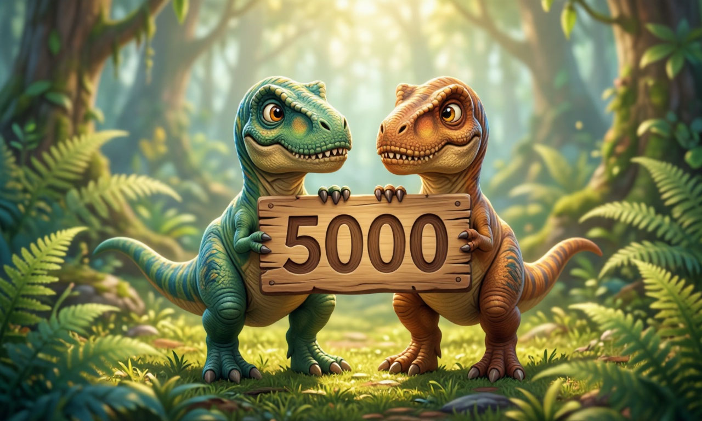

-

Участие в розыгрыше "тык"
Как участвовать: Нажмите желтую кнопку «Принять участие» на странице розыгрыша Итоги: 27 июня в 18:00 на стриме в Discord.
-

Гонка команд имени S1R "тык"
ПризыСезонное событие длительностью 1 неделю. Топ-10 команд с наибольшим количеством очков разделят награду
-

Раскопки Лурдузавра "тык"
Раскопки динозавров:Копите ОА в локациях и копайте кости, чтобы собрать питомца Бонус: Шанс найти кости события увеличен Геном (1.4–1.7)